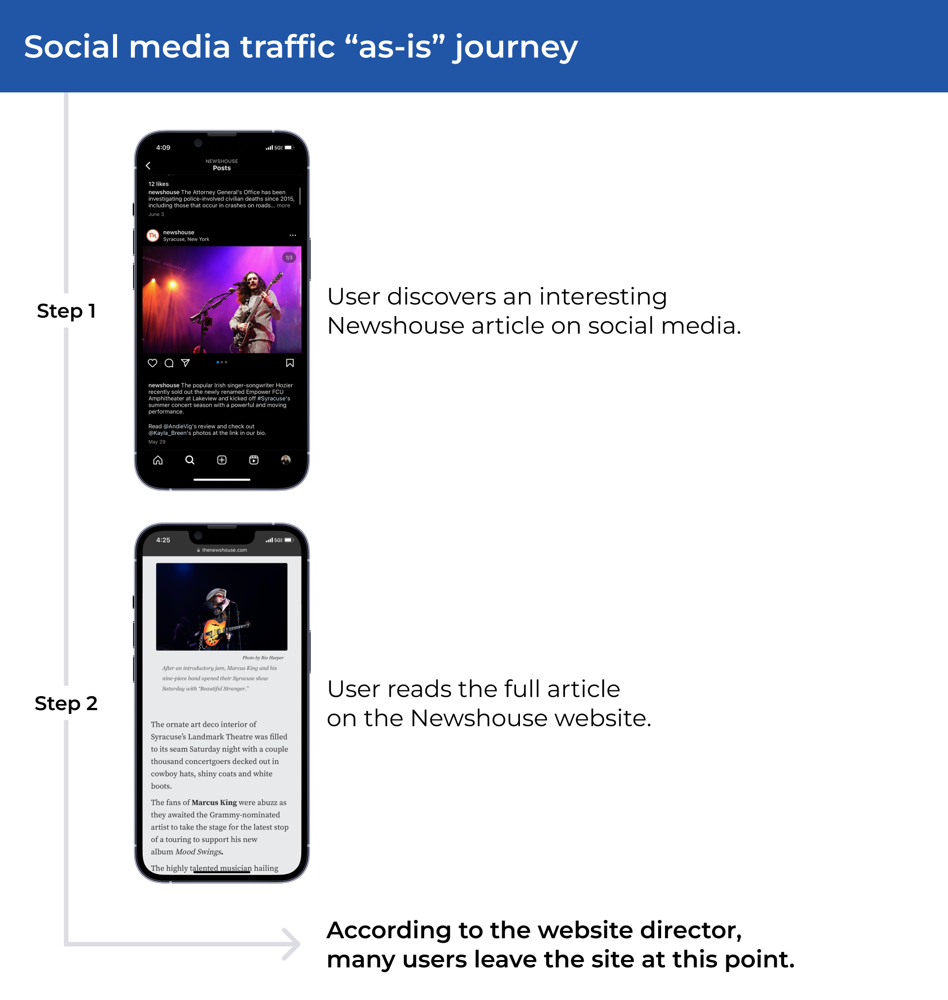
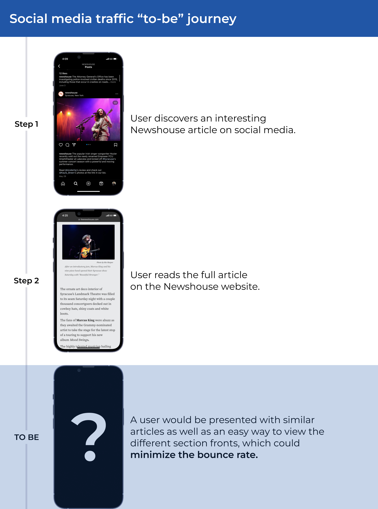
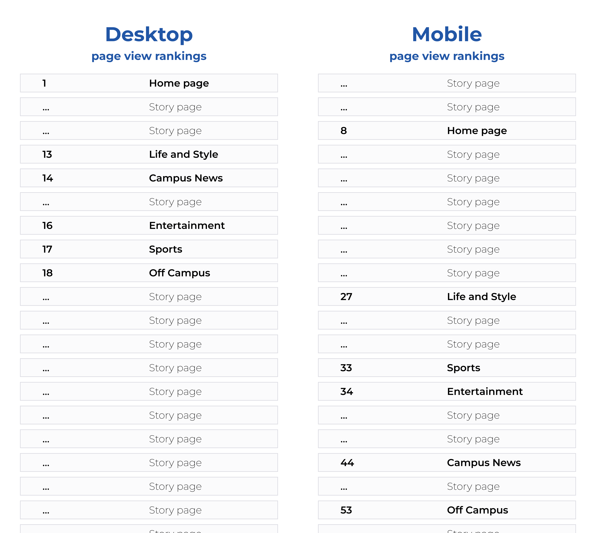
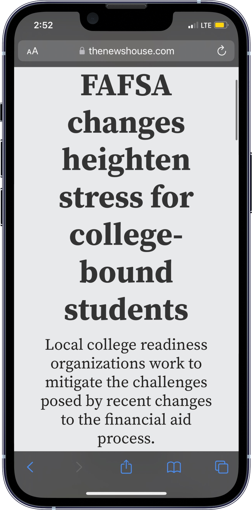
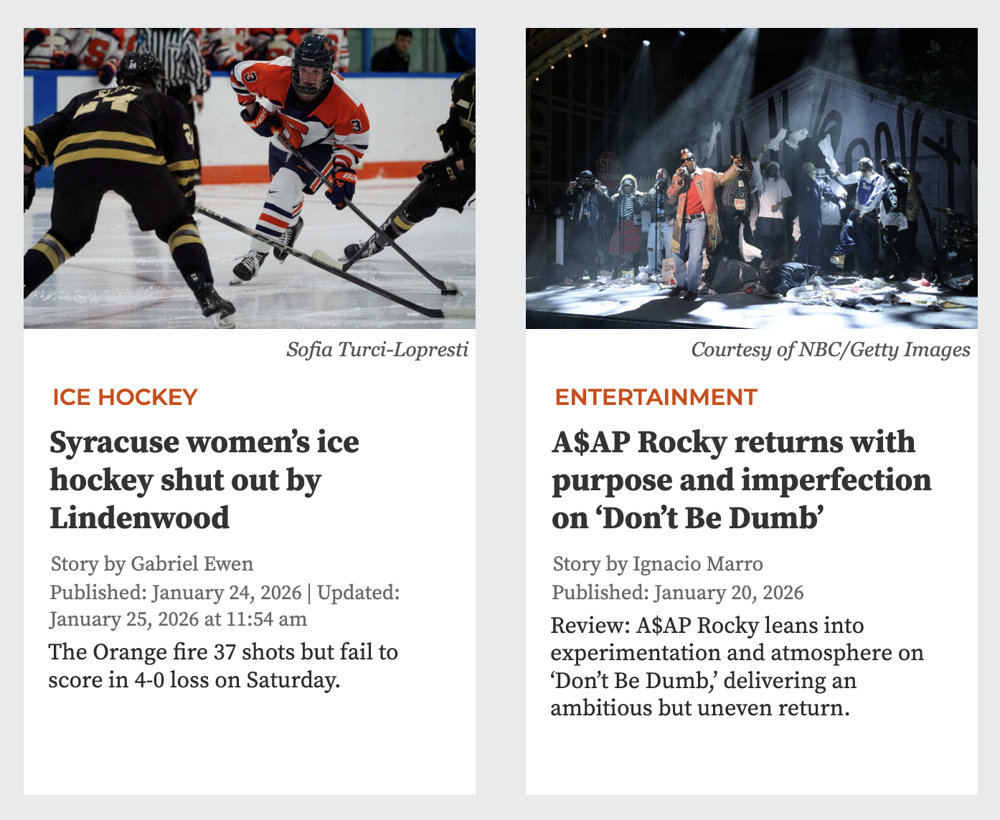
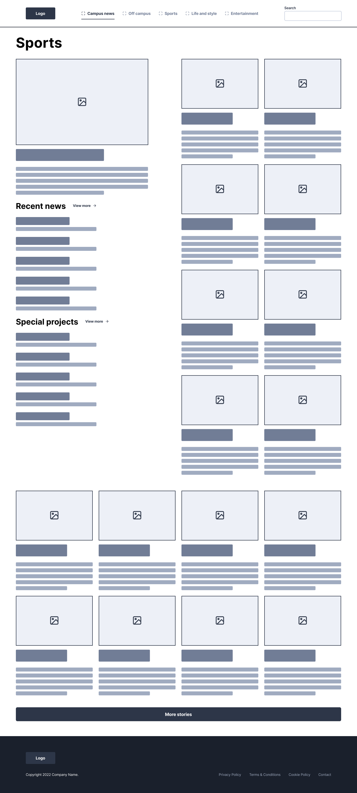
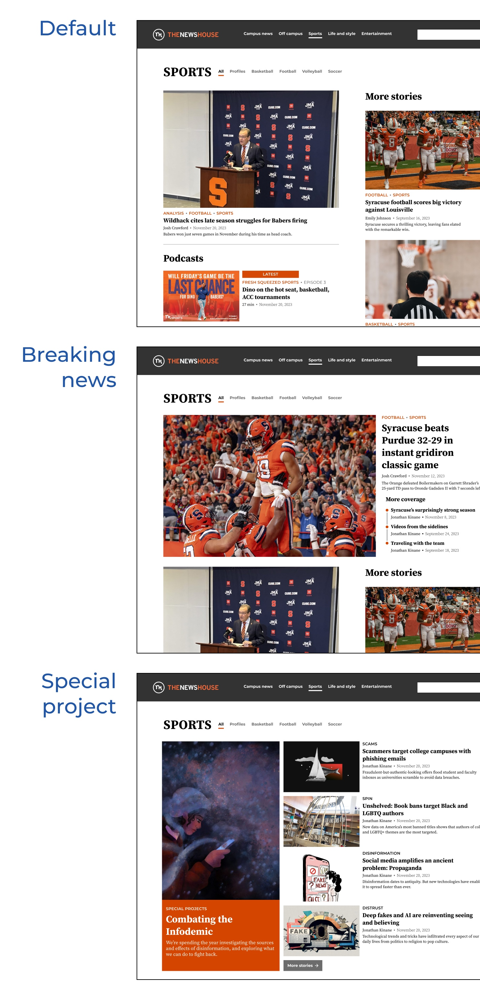
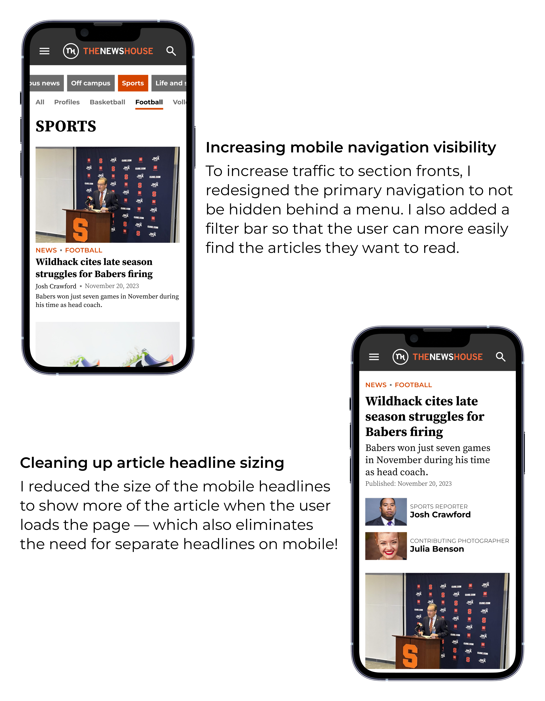

Redesigning a student news website
The Newshouse is a news website at Syracuse University intended to give student journalists experience writing for a real news publication and reporting on events across campus. The director of the website wanted a modern redesign that gives student journalists more flexibility to change the layout based on editorial decisions.
Research
Who am I designing for?
I spoke with some of the key groups of people that use the Newshouse website to find out what problems they have and what changes they want.
The website manager
A professor who manages both the front end and back end of the site, which can be very time consuming.
Goal
To increase site traffic and retention rate with a site that is easy to implement.
Student journalists
Journalism students working for this student news website to get real-world journalism experience.
Goal
To write, edit, and publish articles on the site without needing technical or design support from other people.
Readers
These could be current or prospective students, parents, professors, or members of the Syracuse community..
Goal
To quickly find current articles relevant to their interests whenever they visit the site.
Mobile traffic from social media
The website manager said that users often come to the site when they find an interesting article on social media. After being directly linked to and reading that article, they leave the site.


Analyzing user behavior from analytics
The manager of the Newshouse said that users often come to a specific article on their phone through social media, read it, then leave without going to other articles or a section front.
A pattern I noticed in the analytics data is that the section fronts on desktop have higher page view rankings than their counterparts on mobile.
One of the differences between the desktop and mobile views of the Newshouse is that on mobile, the section front pages are hidden behind a hamburger menu. That made me wonder if the mobile section fronts have lower page view rankings because they are not right in front of the viewer like they are on desktop.

Potential design opportunities
After I observed student journalists go through the process of creating and uploading an article to the website, a few things stood out to me.
The font size on mobile is the same size as desktop.
As a result, student journalists sometimes have to change the headline content on mobile to fit — even if they already like the headline!

Articles are given multiple tags for SEO on the back end, but aren’t fully utilized on the front end.
Since the infrastructure for having article tags already exists, utilizing tags on the front end could help readers discover new articles.

Designing and iterating
My wireframe had too many articles
After showing my wireframe to the website manager, he said there were too many articles, especially with the inclusion of a button that loads more articles. Since the Newshouse only publishes a few articles per week at most, he didn't want there to be lots of older articles on the section fronts.

Designing different headers for different contexts
The website manager wanted to implement WordPress blocks on the website so that student journalists could change the layout based on their editorial decisions. I designed various templates for the section page header that student journalists can choose from, depending on the situation.

Mobile design optimizations
Based on the user journey of mobile users coming from social media, reading an article, and then leaving, I redesigned the navigation of the mobile site to not be hidden behind a hamburger menu. This means that users would be more likely to go to a main section page, where they can discover more articles.

Final designs


Lessons learned
Working with a client
This project showed me what it is like to work with a client and the importance of listening to different stakeholders, which in this case included the website manager, student journalists, and site users.
Combining qualitative and quantitative data
To understand the problems and constraints, I made use of Google Analytics data in addition to talking to users and student journalists. This combination of qualitative and quantitative data helped me create unique insights.
More projects
Designing a tool to help students and professionals find government data while maintaining good data practices

Redesigning a student news website with a focus on creating a modular layout
Helping designers learn web development through the process of building their personal portfolio site

Ideating a tool to give people AI-powered financial advice as team leader of an internal hackathon project